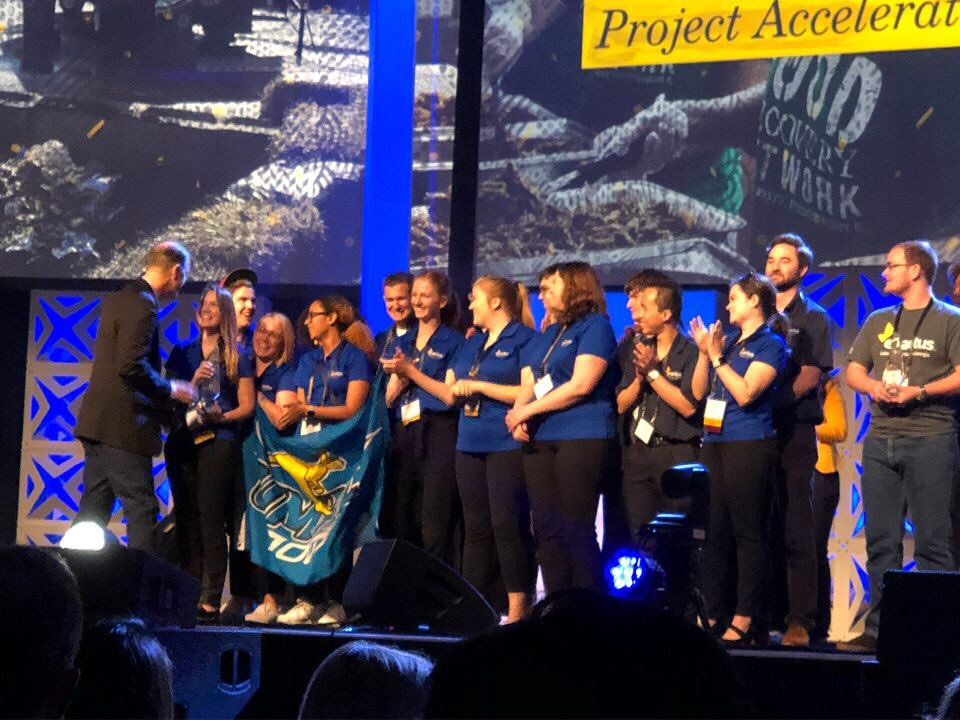

Our project started in 2017 when we recognized two devastating challenges in the Kansas City community: food waste and hunger. In our area, one person out of every seven is food insecure. Over 108,000 of those experiencing food insecurity in our area are children, and of these children, 42% do not qualify for federal nutrition programs. Hundreds of thousands of our neighbors, coworkers, friends, and family in the area suffer from hunger every day. At the same time, 40% of ALL food produced in the United States ends up in a landfill – an estimated 65 million tons of food waste per year. This costs our country 165 billion dollars annually while drastically increasing fossil fuel emissions and freshwater consumption. One of our own Enactus members who worked in the UMKC cafeteria noticed the extent of food waste in our own backyard and brought this challenge to the team. Rather than seeing these challenges as roadblocks, though, we saw them as opportunities. At the intersection of these two needs we used creativity and innovation to craft a solution. We connected with local food vendors like the UMKC cafeteria to take safe and nutritious food to local soup kitchens instead of the landfill. After implementing our service at our home university of UMKC, we have reduced our food waste by more than 700 lbs per semester. That’s 700 lbs of food directly translating into dollars saved for their bottom line in just 4 months. What would this look like implemented within your business? We also want to find out. We are currently searching for businesses who are willing to record and share their business’ savings with us to show others the benefits of reducing their food waste.

I am an B.B.A. Entrepreneurship major set to graduate in May 2020. I’m thrilled to be the current president of UMKC Enactus, and I have also been Recruitment and Retention and a Project Admin, as well as the Project Leader of Arts and Entrepreneurship. I joined because I wanted to improve my community in a sustainable and creative way, and connect with people different than me. By being involved, I’ve gone on countless adventures, discovered the world, and learned about myself. Ultimately, I’d like to continue working in social entreprenuership while persuing visual storytelling and working in research and desgin for a company. A quote I love is “Everyone you will ever meet knows something you don’t.” -Bill Nye